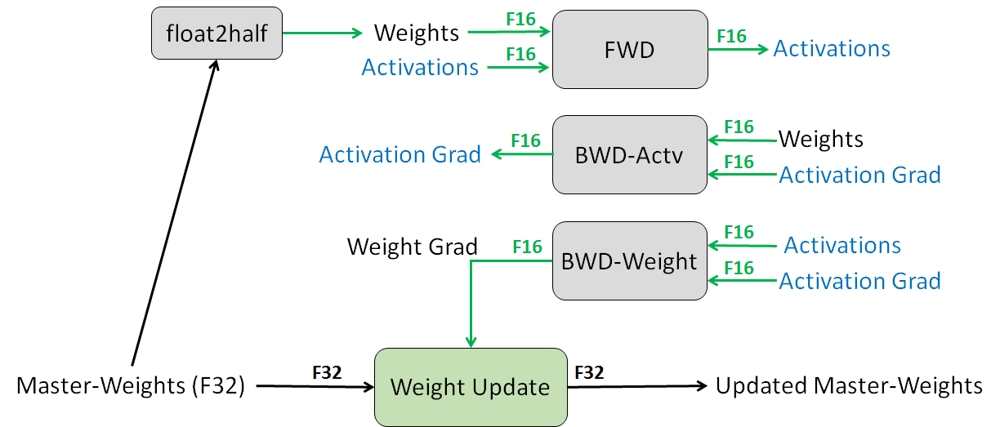

发展脉络
预训练从 CLM/MLM 目标扩展到多 token 预测、课程数据和合成数据，训练规模则由 Kaplan 经验律推进到 Chinchilla 的计算最优配比。
训练大模型时，显存总是比算力先见底。一个 7B 模型，光是权重加梯度加优化器状态就要 112 GB——单张 80 GB 的卡连一份都放不下。这一页要做三件事：教你徒手算出任何模型的显存账、讲清 FP32/FP16/BF16/FP8 每一位比特都在干什么、把「显存换算力」的各种手段（梯度检查点、卸载、重计算）摆到同一张表上比较代价。看完你应该能回答：「我这台机器到底能训多大的模型，卡在哪一块，该拧哪个旋钮。」
混合精度的核心思路只有一句：用低精度存和算（省显存、跑得快），用高精度更新参数（不丢精度）。因为参数更新的步长常常小到 $10^{-7}$ 量级，在 BF16 里会被直接舍入成零——所以必须留一份 FP32 的「主权重」专门承接更新。至于其他显存手段——梯度检查点、激活值压缩、CPU 卸载——本质都是同一笔交易：用额外的计算或通信，换回显存空间。
所有优化手段都是在跟显存做交易，所以第一件事是学会记账。训练时的显存分成两大块，它们的增长规律完全不同：
权重、梯度、优化器状态。只跟参数量有关，跟 batch size 和序列长度完全无关。它是一个「固定开销」，不训练就不存在，一训练就必然存在。
前向算出来、要留到反向用的中间结果。跟 batch size、序列长度、层数都成正比。它是一个「可变开销」，也是你唯一能通过调 batch 和重计算大幅压缩的部分。
标准 BF16 混合精度 + Adam 优化器，设参数量为 $\Psi$，每个参数需要：
这里藏着一个让很多人意外的事实。我们把纯 FP32 训练也算一遍：FP32 权重 $4\Psi$ + FP32 梯度 $4\Psi$ + Adam 一阶矩 $4\Psi$ + 二阶矩 $4\Psi$ = 同样是 $16\Psi$。
| 训练配置 | 权重 | 梯度 | 优化器状态 | 每参数合计 | 7B 模型 |
|---|---|---|---|---|---|
| 纯 FP32 + Adam | 4 B | 4 B | 8 B | 16 B | 112 GB |
| BF16 混合精度 + Adam | 2 B（+4 B 主权重） | 2 B | 8 B | 16 B | 112 GB |
| BF16 + FP32 梯度累加 | 2 B（+4 B 主权重） | 4 B | 8 B | 18 B | 126 GB |
| BF16 + SGD 带动量 | 2 B（+4 B 主权重） | 2 B | 4 B | 12 B | 84 GB |
| BF16 + Adafactor | 2 B（+4 B 主权重） | 2 B | 近似 0（因子化） | 约 8 B | 约 56 GB |
| 纯推理（BF16，无梯度） | 2 B | — | — | 2 B | 14 GB |
最后一行值得单独看：推理只要 2 字节每参数，训练要 16 字节，正好 8 倍。这就是为什么「一张 4090 能跑 7B 推理，却训不了 7B」。
激活值的估算复杂一些，但有可用的经验公式。对标准 Transformer 层，Megatron 团队给出的每层激活值显存约为：
其中 $s$ 是序列长度、$b$ 是每卡 batch size、$h$ 是隐藏维度、$a$ 是注意力头数（该式基于 2 字节存储、不开重计算、不开并行的假设）。注意第二项 $5as/h$——它来自那个 $s \times s$ 的注意力分数矩阵，随序列长度平方增长，正是长序列训练爆显存的元凶。
代入一个 7B 量级的配置（$h=4096$，$a=32$，$L=32$ 层，$s=4096$，$b=1$）实际算一下：
| 激活值方案 | 每层公式 | 每层大小 | 32 层合计 | 说明 |
|---|---|---|---|---|
| 朴素实现 | $sbh(34 + 5as/h)$ | 约 3.25 GB | 约 104 GB | 要存下 $s \times s$ 注意力矩阵 |
| 用 FlashAttention | $34\,sbh$ | 约 0.57 GB | 约 18 GB | 注意力矩阵不落显存，$5as/h$ 项消失 |
| 全量梯度检查点 | $2\,sbh$ | 约 34 MB | 约 1.1 GB | 每层只存输入，其余反向时重算 |
这张表信息量极大，值得逐条消化：
把上面的公式写成代码，开跑前先估一遍，能省掉大量「跑到第 3 步 OOM」的时间：
GB = 1e9
def estimate_memory(
n_params, # 参数量,例如 7e9
n_layers, hidden, n_heads,
seq_len, micro_bsz,
bytes_per_param_state=16, # BF16 混合精度 + Adam
flash_attn=True,
full_recompute=False,
zero_stage=0, # 0/1/2/3
dp_size=1,
):
# --- 1) 模型状态 ---
if zero_stage == 0:
state = n_params * bytes_per_param_state
elif zero_stage == 1:
state = n_params * 4 + n_params * 12 / dp_size
elif zero_stage == 2:
state = n_params * 2 + n_params * 14 / dp_size
else:
state = n_params * 16 / dp_size
# --- 2) 激活值 ---
sbh = seq_len * micro_bsz * hidden
if full_recompute:
per_layer = 2 * sbh # 每层只存输入
elif flash_attn:
per_layer = 34 * sbh # 无 s*s 矩阵
else:
per_layer = sbh * (34 + 5 * n_heads * seq_len / hidden)
act = per_layer * n_layers
print(f"模型状态 : {state / GB:8.1f} GB")
print(f"激活值 : {act / GB:8.1f} GB")
print(f"合计 : {(state + act) / GB:8.1f} GB (不含 logits 与碎片)")
return state, act
# 7B,单卡,不分片
estimate_memory(7e9, 32, 4096, 32, seq_len=4096, micro_bsz=1)
# 7B,8 卡 ZeRO-3 + 全量重计算
estimate_memory(7e9, 32, 4096, 32, seq_len=4096, micro_bsz=1,
full_recompute=True, zero_stage=3, dp_size=8)这个估算永远偏乐观，因为它没算：CUDA context（每卡几百 MB 起）、通信缓冲区、显存碎片、临时 workspace、logits 峰值。实践中留 15%–20% 余量比较稳妥。真正精确的做法是跑几十步后读 torch.cuda.max_memory_allocated()。
要理解为什么是 BF16 而不是 FP16，得先看清一个浮点数是怎么构成的。任何浮点格式都由三段组成：
| 格式 | 位分配 符号/指数/尾数 | 最大可表示值 | 最小正规数 | 相对精度 （机器 epsilon） | 典型用途 |
|---|---|---|---|---|---|
| FP32 | 1 / 8 / 23 | 约 $3.4 \times 10^{38}$ | 约 $1.2 \times 10^{-38}$ | 约 $1.2 \times 10^{-7}$ | 主权重、优化器状态、归约 |
| TF32 | 1 / 8 / 10 | 同 FP32 | 同 FP32 | 约 $9.8 \times 10^{-4}$ | Ampere 起的 FP32 GEMM 加速档 |
| FP16 | 1 / 5 / 10 | 65504 | 约 $6.1 \times 10^{-5}$ | 约 $9.8 \times 10^{-4}$ | 推理、部分微调（需 loss scaling） |
| BF16 | 1 / 8 / 7 | 约 $3.4 \times 10^{38}$ | 约 $1.2 \times 10^{-38}$ | 约 $7.8 \times 10^{-3}$ | 预训练事实标准 |
| FP8 E4M3 | 1 / 4 / 3 | 448 | 约 $1.5 \times 10^{-2}$ | 0.125 | FP8 前向、权重与激活 |
| FP8 E5M2 | 1 / 5 / 2 | 57344 | 约 $6.1 \times 10^{-5}$ | 0.25 | FP8 反向、梯度 |
FP16 的最大值只有 65504，最小正规数是 $6.1 \times 10^{-5}$。深度网络里梯度普遍很小，反向传播中很容易出现小于 $10^{-5}$ 的值——它们在 FP16 里会直接下溢成 0，梯度信息凭空消失。
解决办法是 loss scaling：把 loss 乘以一个大数 $S$（比如 $2^{16}$），根据链式法则所有梯度都会同比放大 $S$ 倍，从而脱离下溢区；优化器更新前再除回 $S$。$S$ 太小压不住下溢，太大又会上溢，所以要动态调节：
BF16 的巧妙之处在于指数位和 FP32 一样多，动态范围完全相同。FP32 能表示的数值 BF16 都能表示（只是不够精确），既不会上溢也不会下溢——不需要 loss scaling，不需要跳步，不需要调 scale。代价是尾数只有 7 位，相对精度约 0.8%。但大模型训练里，梯度本身就带着采样噪声，这点量化噪声完全在可接受范围内。这就是 BF16 成为事实标准的原因。
reduce_dtype=torch.float32）；②梯度累积的累加器用 FP32；③LayerNorm / Softmax / 损失计算这些含求和的算子内部用 FP32 累加——主流框架的算子实现基本都已经这么做了，但自己写 kernel 时要特别注意。
把上面的原理落到一步训练上。先看混合精度训练奠基论文（Mixed Precision Training）里的原图——它把「一层网络在混合精度下的一步迭代」画得清清楚楚，是理解整个流程最好的第一手材料。

新手读这张图，按从上到下的数据流走一遍：① 最上面是「FP32 主权重（Master Weights）」——它常驻 FP32，是优化器（Adam）真正更新的对象，保证每次更新的小步长不被低精度舍入吞掉。② 右边向下那条线——每个训练步开始前，把 FP32 主权重复制一份并 cast 成 FP16，得到「FP16 权重副本」，参与前向计算。注意是复制一份低精度副本，不是把主权重本身降精度。③ 前向 + 反向——FP16 权重与 FP16 激活走矩阵乘法（Tensor Core），得到 FP16 梯度。④ 权重更新前——把 FP16 梯度升回 FP32（必要时乘 loss scale），用于更新 FP32 主权重，进入下一轮循环。
这张图回答了一个本页最核心的问题：为什么混合精度训练能「又快又稳」？答案就在那条「FP32 主权重 → FP16 副本」的复制线上——计算用低精度（快），更新用高精度（稳），两者通过每次迭代的 cast 解耦。右边那条从 FP32 主权重到 FP16 权重副本的虚线，是整张图最重要的一笔：它意味着模型参数的低精度版本「用完即弃」，高精度真相永远安全地保存在主权重里。对照上面那张自制状态机，你会发现自制图画的是「整个训练循环」，论文图画的是「单层单步的精度流转」——两者互补。
在 PyTorch 里，单卡场景最常见的写法是用 torch.amp：
import torch
from torch.amp import autocast, GradScaler
model = MyModel().cuda()
opt = torch.optim.AdamW(model.parameters(), lr=3e-4)
# BF16 不需要 GradScaler;这里演示 FP16 场景需要它
use_bf16 = torch.cuda.is_bf16_supported()
dtype = torch.bfloat16 if use_bf16 else torch.float16
scaler = GradScaler("cuda", enabled=(dtype == torch.float16))
for batch in loader:
opt.zero_grad(set_to_none=True)
# 只把前向包进 autocast:框架会自动决定哪些算子降精度
# GEMM/conv 降到低精度,softmax/layernorm/loss 保持 FP32
with autocast(device_type="cuda", dtype=dtype):
out = model(batch["input_ids"])
loss = compute_loss(out, batch["labels"])
scaler.scale(loss).backward() # FP16 时放大 loss;BF16 时是恒等操作
scaler.unscale_(opt) # 裁剪前必须先还原真实梯度尺度
torch.nn.utils.clip_grad_norm_(model.parameters(), max_norm=1.0)
scaler.step(opt) # 内部会检查 Inf/NaN,异常则跳过这一步
scaler.update() # 动态调整 scale这段代码里有三个高频错误点，值得单独点出来：
| 错误写法 | 会发生什么 | 正确做法 |
|---|---|---|
把 backward() 也放进 autocast 里 | 反向的 dtype 推导混乱，可能报错或静默降精度 | 只包前向和 loss 计算 |
裁剪前忘了 unscale_ | 裁剪作用在放大 $S$ 倍的梯度上，阈值实际被放大 $S$ 倍，等于没裁 | 先 unscale_ 再 clip_grad_norm_ |
手动把整个模型 .half() 或 .bfloat16() | 优化器直接在低精度权重上更新，小步长被舍入成零，模型「学不动」 | 用 autocast 或框架的 MixedPrecision 配置，保住 FP32 主权重 |
FP8 是 Hopper 架构起提供硬件支持的更激进格式，只有 8 位。相比 BF16，它能再减半权重与激活的存储、把 Tensor Core 的理论算力再翻一倍。但 8 位实在太窄了——E4M3 的相对精度只有 0.125，直接拿来训练必然崩溃。真正能用起来靠三件配套技术。
E4M3（4 位指数 3 位尾数）精度稍高、范围窄，用于前向的权重和激活；E5M2（5 位指数 2 位尾数）范围大、精度更低，用于反向的梯度——因为梯度的数值跨度比激活大得多，范围比精度更要紧。
为每个张量维护一个缩放因子，把数值搬到 FP8 的有效区间再量化。工程上分两派：延迟缩放用历史若干步的最大值预测本步的因子（省一次扫描）；即时缩放当场算当前张量的最大值（更准但多一次读写）。
FP8 只用于 GEMM 的输入，累加器仍然是 FP32 或更高。否则几千次累加下来，量化误差会滚成灾难。这也是为什么 FP8 的实际加速比往往达不到理论的 2 倍。
缩放的粒度是 FP8 工程里最关键的设计选择，粒度越细精度越好、开销越大：
| 缩放粒度 | 做法 | 抗离群值能力 | 开销 |
|---|---|---|---|
| per-tensor | 整个张量共用一个缩放因子 | 弱：一个离群值就把其余数值全压到量化底噪里 | 最小 |
| per-channel / per-token | 按输出通道或按 token 各自一个因子 | 中等：能隔离单行单列的异常 | 小 |
| 分块（tile / block-wise） | 把矩阵切成小块，每块一个因子 | 强：离群值的影响被限制在一个小块内 | 中等，需要专门 kernel |
DeepSeek-V3 的技术报告是目前公开资料里对 FP8 大规模预训练描述最完整的一份：它采用了细粒度的分块量化（激活按 tile、权重按 block）配合提升累加精度的策略，把 FP8 训练真正跑到了超大规模。这说明 FP8 训练已经从「论文里的可能性」变成了「工业上的现实」，但它依赖一整套精心设计的量化策略，不是把 dtype 一改就能用的开关。
前向传播产生的激活值必须留到反向用，这是激活值显存的全部来源。梯度检查点（Gradient Checkpointing，也叫激活重计算）的想法很朴素：反正这些值是算出来的，那就别存，反向要用时现算一遍。
为什么额外开销是约 33% 而不是 100%？因为反向传播的计算量大约是前向的两倍。原本一步 = 前向 1 + 反向 2 = 3 个单位；开了全量重计算 = 前向 1 + 重算前向 1 + 反向 2 = 4 个单位。$4/3 \approx 1.33$，多了三分之一。下面的表把三档粒度摆到一起，代价与收益依次递减：
实际使用有三档粒度，代价与收益依次递减：
| 粒度 | 做法 | 激活值显存 | 额外计算 | 什么时候用 |
|---|---|---|---|---|
| 不开 | 全部激活值留在显存 | 基准（约 18 GB） | 0 | 显存宽裕，追求最高吞吐 |
| 选择性重计算 | 只重算「占显存大但算得快」的部分，主要是注意力内部；GEMM 结果照常保存 | 大幅下降 | 很小 | 默认首选，性价比最高 |
| 整层检查点 | 每个 Transformer Block 存一个输入 | 约 1.1 GB | 约 +33% | 显存紧张，需要开大 batch |
| 分段检查点 | 每 $k$ 层存一个检查点 | 介于两者之间 | 介于两者之间 | 需要精细调节时 |
--recompute-granularity selective 就是干这个的，PyTorch 侧也有相应的选择性 checkpoint 接口。顺序是：先开选择性，不够再开全量。
# 写法一:PyTorch 通用接口,手动包住要重算的模块
from torch.utils.checkpoint import checkpoint
class Block(torch.nn.Module):
def __init__(self, ..., use_ckpt=False):
super().__init__()
self.use_ckpt = use_ckpt
# ... 定义 attn / mlp / norm
def forward(self, x):
if self.use_ckpt and self.training:
# use_reentrant=False 是新版推荐写法,与 FSDP/compile 兼容更好
return checkpoint(self._fwd, x, use_reentrant=False)
return self._fwd(x)
def _fwd(self, x):
x = x + self.attn(self.norm1(x))
x = x + self.mlp(self.norm2(x))
return x
# 写法二:配合 FSDP 使用的标准包装
from torch.distributed.algorithms._checkpoint.checkpoint_wrapper import (
checkpoint_wrapper, CheckpointImpl, apply_activation_checkpointing,
)
apply_activation_checkpointing(
model,
checkpoint_wrapper_fn=lambda m: checkpoint_wrapper(
m, checkpoint_impl=CheckpointImpl.NO_REENTRANT
),
check_fn=lambda m: isinstance(m, Block), # 只对 Transformer Block 生效
)
# 写法三:Hugging Face 生态一行开启
model.gradient_checkpointing_enable()
model.config.use_cache = False # 必须关掉 KV cache,否则与重计算冲突use_cache：Hugging Face 模型开梯度检查点时如果不关 KV cache，轻则报警告重则报错。torch.compile 的兼容：老的 reentrant 实现会打断计算图，建议统一用 use_reentrant=False / NO_REENTRANT。
把所有手段放到同一张表上，按「省的是哪一块显存」分类，选择就变得机械化了：
| 手段 | 省的是 | 原理 | 代价 | 优先级 |
|---|---|---|---|---|
| FlashAttention | 激活值 | 注意力分数矩阵不落显存，分块在片上算 | 几乎为零，还更快 | 必开 |
| BF16 混合精度 | 激活值 + 算力 | 低精度存算，Tensor Core 加速 | 需保 FP32 主权重 | 必开 |
| 选择性重计算 | 激活值 | 只重算便宜的中间结果 | 少量额外计算 | 高 |
| ZeRO / FSDP 分片 | 模型状态 | 参数、梯度、优化器状态按卡切分 | 额外通信 | 高（多卡场景） |
| 梯度累积 | 激活值 | 小 micro batch 多次累积，等效大 batch | 不省状态显存，步时变长 | 高 |
| 全量梯度检查点 | 激活值 | 每层只存输入，反向重算 | 约 +33% 计算 | 中 |
| 序列 / 上下文并行 | 激活值 | 沿序列维切分到多卡 | 额外通信 | 中（长上下文必需） |
| Adafactor / 8-bit Adam | 优化器状态 | 因子化或量化二阶矩 | 可能影响收敛质量 | 中 |
| CPU 卸载 | 模型状态 | 不用的状态搬到主机内存 | PCIe 带宽比 HBM 低两个数量级 | 低（应急） |
| NVMe 卸载 | 模型状态 | 搬到固态硬盘 | 再低一个数量级 | 最低（极限场景） |
zero_grad(set_to_none=True) 打开。OOM 报错信息通常只会告诉你「试图分配 X GB 失败」，对定位毫无帮助。下面这套流程能把范围快速收窄：
几个立刻能用的排查动作：
torch.cuda.max_memory_allocated() 和 memory_reserved()。两者差距大说明碎片严重。| 组件 | 单卡朴素 BF16 混合精度 | + FlashAttention | + 全量重计算 | + 8 卡 ZeRO-3 |
|---|---|---|---|---|
| BF16 权重 + FP32 主权重 | 42 GB | 42 GB | 42 GB | 5.3 GB |
| BF16 梯度 | 14 GB | 14 GB | 14 GB | 1.8 GB |
| Adam 一阶矩 + 二阶矩 | 56 GB | 56 GB | 56 GB | 7.0 GB |
| 激活值（4K 序列，batch 1） | 约 104 GB | 约 18 GB | 约 1.1 GB | 约 1.1 GB |
| 单卡合计 | 约 216 GB | 约 130 GB | 约 113 GB | 约 15 GB |
| 80 GB 卡能跑吗 | 不行 | 不行 | 不行 | 能，还剩很多余量 |
注：以上为按公式估算的量级，不含 CUDA context、通信缓冲、logits 峰值与显存碎片，实际占用会更高。
这张表把整页的逻辑串了起来：混合精度和重计算解决的是「激活值」，分片解决的是「模型状态」，两者缺一不可。前三列不管怎么优化都跑不起来，因为模型状态那 112 GB 纹丝不动；只有上了 ZeRO-3 把状态切开，才真正把 7B 训练塞进了 80 GB 单卡的预算里，而且还留出了开大 batch 的空间。「省」和「分」是两条正交的路，必须同时走。
混合精度领域最折磨人的问题不是 OOM，而是「一切正常但结果悄悄变差」。下面三个案例都真实发生过，且都没有任何报错：
案例一：checkpoint 里的主权重被覆盖成 BF16。某团队把「FP32 主权重」和「BF16 计算副本」一起存进 checkpoint，恢复时误把 BF16 副本读回主权重。症状：恢复后 loss 曲线与中断前对不上，而且越训越差。排查方法：保存时在名字里显式区分 master_weight 和 param_bf16，恢复后用一次「精度自检」——对比 BF16 前向与强制 FP32 前向的输出差异。
案例二：梯度累积的累加器用了 BF16。大批量训练常用梯度累积，如果累加器本身是 BF16，累加几十步后尾数截断误差会系统性累积，等效于每一步都在给梯度加噪声。症状：同等配置下 loss 比单卡基线高 0.05–0.1，怎么调学习率都压不下去。排查方法：检查累积器的 dtype，务必用 FP32。
案例三：长序列的 LayerNorm 走了低精度累加。手写自定义 kernel 时，如果 LayerNorm 的均值/方差求和用 BF16 累加器，序列长度 32K 时误差会明显放大。症状：随着上下文窗口变长，同一条验证集的困惑度缓慢恶化。排查方法：对同一输入分别用框架自带算子和自定义 kernel 跑前向，比较输出差异。
这三个案例的共同教训是：混合精度不只是「开个开关」，而是「每个算子、每个缓冲区的 dtype 都要被显式审计」。主权重、梯度归约、累积器、norm 求和这四处，是新手最常漏掉的四个低精度陷阱。对应到工具上，定期跑「BF16 vs FP32 前向差异」的自检脚本，能把这些「不报错的 bug」扼杀在萌芽期。
autocast 与 GradScaler 的算子降精度规则与正确用法以官方文档为准 · pytorch.org本章覆盖从数据到训练集群的完整预训练链路：目标函数、语料清洗与合成、Scaling Laws、并行策略、混合精度和稳定性。
阅读提示：预训练效果不是参数量单变量函数；数据质量、token 数、优化稳定性和通信效率共同决定最终结果。
最早系统刻画模型规模、数据量、计算量和损失之间幂律关系的工作。
Chinchilla 结论：固定算力下模型参数和训练 token 应共同增长，纠正只堆参数的直觉。
公开语料混合、来源比例和去重处理的代表性数据集论文。
张量并行、流水线并行和大规模 Transformer 训练工程的经典来源。
FSDP 的参数、梯度和优化器状态分片语义，适合将并行原理落到可运行配置。
资料优先选用原始论文、官方文档、大学课程和公共机构材料；链接按 2026-08-10 检索，具体版本以来源页面为准。
预训练从 CLM/MLM 目标扩展到多 token 预测、课程数据和合成数据，训练规模则由 Kaplan 经验律推进到 Chinchilla 的计算最优配比。
把数据去重、混合比例、token 预算、并行策略、checkpoint 和验证集视为同一个实验设计，而不是互相独立的脚本参数。
更多数据、更多参数和更长训练之间需要按计算预算平衡；数据污染、重复和合成数据坍缩会让离线 loss 失真。
持续预训练、数据飞轮、MTP、FP8 和新优化器仍在发展，必须报告数据谱系和消融实验。
能解释 FP16、BF16、FP8 的动态范围与精度差异，并选择 loss scaling、master weight 和 checkpointing 策略。
先修语言模型目标、反向传播和优化器；把 token 预算、数据版本和 checkpoint 视为实验输入。
在同一小模型上运行 FP32、BF16/FP16 各 100 step，记录 loss、梯度范数、吞吐与峰值显存；主动放大 loss 制造溢出，再开启 GradScaler 或改用 BF16。
稳定配置 100 step 内无 NaN/Inf，末段 loss 与 FP32 趋势一致；报告显存节省、吞吐变化、溢出检测次数及恢复策略。